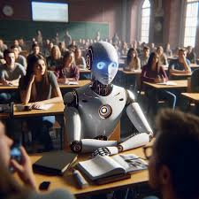
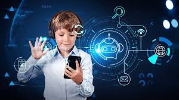
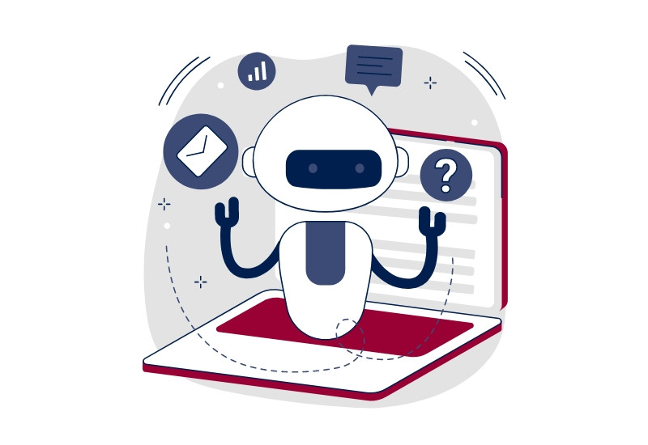

La inteligencia artificial (IA) ha demostrado su potencial para transformar numerosos campos, y la educación no es una excepción. En la era digital actual, la IA ha emergido como una herramienta poderosa que está revolucionando la forma en que se enseña y se aprende. En este artículo, exploraremos el impacto de la inteligencia artificial en la educación y cómo está transformando el panorama educativo en todos los niveles. Desde la personalización del aprendizaje hasta la mejora de la retroalimentación y el desarrollo de recursos interactivos, examinaremos cómo la IA está cambiando la forma en que adquirimos conocimientos y habilidades.
La inteligencia artificial ha emergido como una tecnología disruptiva en el campo de la educación. La capacidad de las máquinas para analizar grandes volúmenes de datos, aprender patrones y tomar decisiones basadas en algoritmos sofisticados está transformando la forma en que enseñamos y aprendemos. Aunque la investigación en inteligencia artificial (IA) en educación lleva décadas desarrollándose a nivel internacional, ha experimentado un gran avance en los últimos diez años impulsada por el desarrollo de técnicas de aprendizaje automático (machine learning), procesamiento de lenguaje natural (NPL) y redes neuronales, entre otras técnicas que requerían de una gran cantidad de datos para su entrenamiento (Chen et al., 2022; Prahani et al., 2022).
Las aplicaciones de IA en educación se basan en una amplia gama de técnicas, que además de las anteriormente mencionadas, incluyen la minería de datos educativos (data mining), las analíticas de datos (learning analytics), sistemas multiagente, lógica difusa y sistemas bayesianos, entre otras. Por ejemplo, las técnicas de minería de datos y analítica de datos de aprendizaje se utilizan para analizar grandes cantidades de datos de los estudiantes con el fin de identificar patrones y tendencias en el rendimiento académico, el comportamiento y la interacción del estudiante, lo cual puede ayudar a los educadores a diseñar planes de estudio personalizados y proporcionar retroalimentación detallada a los estudiantes (Chan, Hogaboam & Cao, 2022).
En el caso de los sistemas multiagente, se utilizan para crear sistemas de tutoría inteligente que pueden interactuar con los estudiantes y proporcionar ayuda en tiempo real en función de sus necesidades específicas, proporcionando una experiencia de aprendizaje personalizada y adaptativa (Murtaza et al., 2022). Las redes neuronales se utilizan para la clasificación y el análisis de datos, la identificación de patrones de aprendizaje y la creación de sistemas de reconocimiento de voz y texto. [cite: 14] La lógica difusa se utiliza para la modelización de incertidumbres y para la creación de sistemas de evaluación adaptativos y personalizados, al igual que los sistemas bayesianos, que se utilizan para la toma de decisiones y la modelización de incertidumbres en sistemas de recomendación de contenido educativo y sistemas de evaluación adaptativos.
El estado del arte en esta materia es amplio, y lleva muchos años desarrollándose, y posiblemente veremos en un presente-futuro próximo más avances emocionantes en este campo, impulsados por técnicas de IA cada vez más sofisticadas. A continuación, veremos algunas de las aplicaciones de IA en educación organizada por diferentes niveles, para luego ver las tendencias actuales existentes, sus potenciales problemas, desafíos y oportunidades.
En la actualidad, se están explorando diversas aplicaciones de la IA en el ámbito educativo, incluyendo la personalización del aprendizaje, la evaluación automatizada, la tutoría inteligente y la detección temprana de problemas de aprendizaje (Chen et al., 2022; González-González, 2004). Una de las áreas más destacadas de la investigación en IA en educación es la personalización del aprendizaje (Murtaza et al., 2022), que trata sobre el uso de algoritmos de aprendizaje automático para adaptar la experiencia de aprendizaje a las necesidades y características individuales del estudiante, lo que puede mejorar significativamente la eficacia del proceso de aprendizaje.
Otra área de investigación en IA en educación es la evaluación automatizada (Lloret et al., 2022), que implica el uso de algoritmos de aprendizaje automático para evaluar automáticamente el trabajo de los estudiantes, lo que puede ahorrar tiempo y mejorar la objetividad de las evaluaciones. También se puede utilizar la evaluación automatizada para la detección del plagio, como ejemplo lo realiza Turnitin. ]Esta plataforma de detección de plagio utiliza técnicas de IA, como el aprendizaje automático y el procesamiento del lenguaje natural, para identificar y comparar el texto de los estudiantes con otros textos en la web y en su propia base de datos identificando patrones de plagio a través del aprendizaje automático y el procesamiento del lenguaje natural para analizar el texto y compararlo con otros textos.
También se ha investigado sobre el uso de la IA para la tutoría inteligente (González-González et al., 2014; González-González, 2004), que implica el modelado del conocimiento del estudiante, la base de datos de conocimiento experto, modelado de estrategias docentes y uso de agentes virtuales inteligentes para proporcionar retroalimentación y apoyo a los estudiantes. Esto puede ayudar a mejorar la calidad del aprendizaje y reducir el costo de la educación. Un ejemplo es el sistema de tutoría inteligente de Carnegie Learning , que utiliza un modelo de redes neuronales para evaluar el desempeño de los estudiantes en tiempo real. El modelo de redes neuronales procesa la entrada de los estudiantes (por ejemplo, sus respuestas a preguntas de prueba) y luego genera una salida que indica qué tan bien están realizando el tema en cuestión. El sistema de tutoría utiliza esta salida para proporcionar retroalimentación personalizada y adaptativa a los estudiantes.
Además, la IA también está siendo utilizada para la detección temprana de problemas de aprendizaje (Murtaza et al., 2022), lo que puede ayudar a identificar y abordar los problemas antes de que se conviertan en obstáculos importantes para el aprendizaje. Existen numerosas aplicaciones educativas muy conocidas que utilizan técnicas de IA, tales como Knewton , Duolingo , Smart Sparrow o Gradescope es una plataforma de aprendizaje adaptativo que utiliza técnicas de IA para adaptar la experiencia de aprendizaje a las necesidades individuales de cada estudiante y proporcionar retroalimentación detallada en tiempo real. es una plataforma de aprendizaje de idiomas que utiliza técnicas de IA, como el procesamiento del lenguaje natural, para personalizar la experiencia de aprendizaje para cada estudiante y proporcionar retroalimentación adaptativa. Smart Sparrow es una plataforma de aprendizaje adaptativo que permite a los educadores crear cursos personalizados utilizando técnicas de IA para adaptar la experiencia de aprendizaje a las necesidades individuales de cada estudiante. Y Gradescope es una plataforma de evaluación de tareas que utiliza técnicas de IA, como la visión por ordenador y el procesamiento del lenguaje natural, para automatizar la corrección de tareas y proporcionar retroalimentación detallada a los estudiantes.
Además, la IA ha sido utilizada en la educación matemática para mejorar la forma en que se enseña, se aprende y se evalúa. Como ejemplos de proyectos y trabajos relacionados con la IA en educación matemática podemos encontrar la conocida plataforma educativa en línea Khan Academy , que utiliza IA para personalizar la experiencia de aprendizaje para cada estudiante. Esta plataforma utiliza un algoritmo de aprendizaje automático para evaluar el rendimiento del estudiante y adaptar el contenido en consecuencia. Otro proyecto destacado es la plataforma MathSpring , desarrollado por las universidades de Massachusetts Amherst y el Worcester Polytechnic Institute. MathSpring es un software tutorial inteligente que permite la personalización y adaptación de contenidos y actividades y ayuda a los estudiantes a resolver problemas de matemáticas. Asimismo, el sistema ALEKS (Assessment and Learning in Knowledge Spaces) utiliza un algoritmo de IA para adaptar el contenido a las necesidades de aprendizaje de cada estudiante y proporcionar retroalimentación personalizada. En el idioma español encontramos la plataforma Smartik , que utiliza la inteligencia artificial y el big data para detectar el ritmo de aprendizaje y progreso de los estudiantes y les propone un plan de estudios personalizado. El algoritmo creado aprende con cada niño y con los datos que recoge en cada sesión de los estudiantes ofrece ejercicios acordes a sus necesidades y presentan actividades ni muy fáciles para que no se relajen, ni muy duras para que no se frustren.
Además de personalizado, el aprendizaje puede ser ludificado y asistido a través de asistentes virtuales, como por ejemplo el proyecto EMATIC (Educación Matemática a través de las TIC) (González-González et al., 2014), que es un sistema tutorial inteligente multidispositivo centrado en la enseñanza de las matemáticas, especialmente para niños con dificultades educativas. El pensamiento lógico y el aprendizaje de diferentes aspectos de las matemáticas básicas son los principales objetivos de aprendizaje de EMATIC. Además, EMATIC permite a los alumnos realizar de forma no repetitiva el mismo tipo de ejercicio, haciendo que el proceso de aprendizaje sea tan dinámico y entretenido como si de un juego se tratara. En este sentido, también vemos cómo la IA puede ser utilizada para crear juegos educativos de matemáticas personalizados y adaptativos. Por ejemplo, la aplicación Mathspace (https://mathspace.co/) utiliza la IA para crear juegos y actividades interactivas que ayudan a los estudiantes a aprender matemáticas de manera efectiva.
Para la visualización de conceptos matemáticos, vemos cómo la IA puede ser utilizada para crear visualizaciones y modelos interactivos que ayuden a los estudiantes a comprender mejor los conceptos matemáticos abstractos. Por ejemplo, GeoGebra (https://www.geogebra.org/) es una herramienta de matemáticas interactiva que utiliza la IA generativa para crear visualizaciones en 3D de formas geométricas y operaciones matemáticas, o el software de matemáticas Maple (https://www.maplesoft.com/) utiliza la IA para resolver problemas matemáticos complejos y para crear modelos y simulaciones matemáticas. Asimismo, la IA puede ser utilizada para crear ejercicios y problemas matemáticos personalizados, como se utiliza en la herramienta de matemáticas Mathigon (https://es.mathi- REVISTA QURRICULUM, ABRIL 36; 2023, PP. 51-60 55 gon.org/), que permite crear ejercicios y problemas matemáticos interactivos que se adaptan a las habilidades y necesidades de cada estudiante.
Asimismo, diferentes países han introducido la IA en sus sistemas educativos (Lloret et al., 2022; Fengchun et al., 2021). Por ejemplo, el sistema educativo finlandés ha implementado los programas Elements of AI y Building AI, diseñados por la Universidad de Helsinki, los cuales utilizan técnicas de aprendizaje automático para enseñar a los ciudadanos sin conocimientos técnicos sobre el tema. Estonia utiliza métodos basados en minería de datos y aprendizaje automático para identificar factores que puedan contribuir al abandono escolar de los estudiantes. En Polonia, se ha implementado un chatbot para enseñar habilidades técnicas y de programación a los estudiantes, mientras que en los Países Bajos se utiliza un método flexible que involucra a los estudiantes en el aprendizaje a través del uso de agentes inteligentes y técnicas basadas en IA para recuperar información de Internet. Además, existen varias iniciativas para introducir IA en la educación a través de plataformas como Coursera, Educalab y edX, que combinan técnicas basadas en IA con grandes cantidades de datos generados por las interacciones de los estudiantes con sus entornos de aprendizaje, que se utilizan en distintos países como Francia, España, Alemania, Italia y otros países del mundo. Estos son solo algunos ejemplos de los proyectos e investigaciones que se están llevando a cabo en la IA aplicada a la educación. A continuación veremos algunas tendencias actuales en IA en educación.